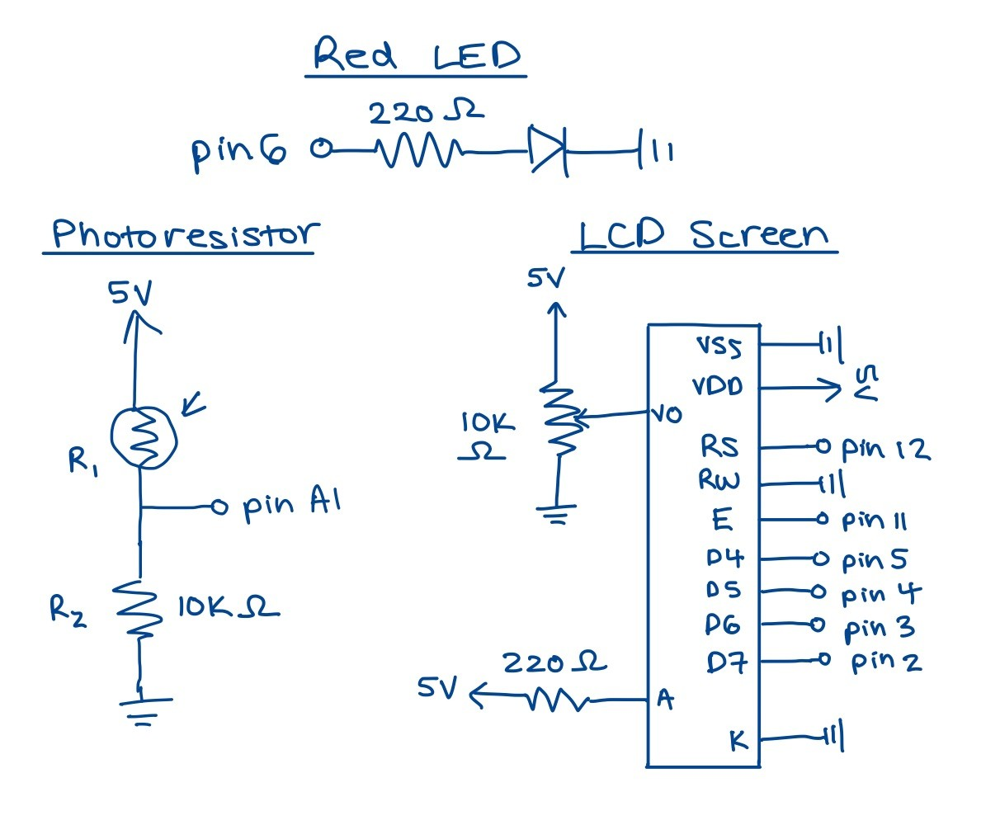
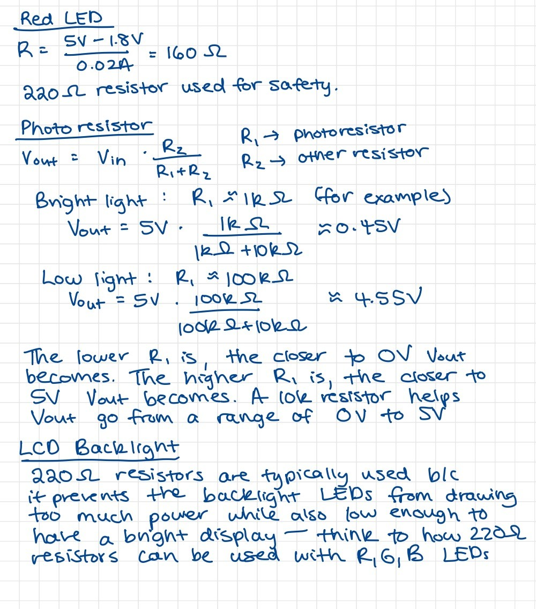
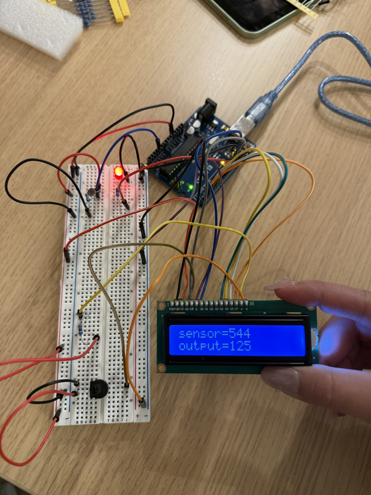

Fig 1a & 1b: Circuit Schematic and Calculations
This schematic depicts my set up of 1 red LED, 1 photoresistor, 1 potentiometer, and 1 LCD screen.
Fig 2: Resistor Calculations
Fig 3: Circuit Setup
A photoresistor is used to control the brightness of a red LED. The brighter the environment, the brighter the LED. A potentiometer is used to control the contrast of the LCD panel, which displays the amount of light the photoresistor senses (ranging 0-1023) and the output value (ranging 0-255) which represents the brightness of the LED.
Fig 4: Input Output GIF

The red LED dims as less light is received by the photoresistor. The photoresistor sensor and output value are displayed on the LCD screen.
Firmware
#include // include the LiquidCrystal library to control the LCD
// Constants, used to give names to the pins used
const int led = 6; // pin 6 has PWM function and is connected to LED
const int photo = A1; // pin A1 to read analog input for photoresistor
const int rs = 12, en = 11, d4 = 5, d5 = 4, d6 = 3, d7 = 2; // LCD pins
LiquidCrystal lcd(rs, en, d4, d5, d6, d7); // create an LCD object w/ specified pins
// Variables
int photoSensorValue; // stores analog value from photoresistor
int photoOutputValue; // stores mapped output value for LED
void setup()
{
// don't need to set up pins A0 to A1 as input because it automatically does that
pinMode(led, OUTPUT); // set up LED pin as an output
Serial.begin(9600); // begin serial communication at 9600 bits per second
lcd.begin(16, 2); // set up LCD with 16 columns and 2 rows
lcd.clear(); // clear LCD screen
}
void loop()
{
photoSensorValue = analogRead(photo); // read analog value from photoresistor
int constrainVal = constrain(photoSensorValue, 200, 900); // constrain values b/w 200-900
photoOutputValue = map(constrainVal, 200, 900, 0, 255); // map constrained value to a range of 0-255 for LED
// if the photo sensor value is below 200, the LED should be off
if (photoSensorValue < 200) {
photoOutputValue = 0;
}
// if the photo sensor value is above 900, the LED should be at max brightness
if (photoSensorValue > 900) {
photoOutputValue = 255;
}
analogWrite(led, photoOutputValue); // adjust the brightness of the LED using PWM
// print sensor value to Serial Monitor
Serial.print("photoresistor sensor value is ");
Serial.print(photoSensorValue);
// print mapped output value for LED to Serial Monitor
Serial.print("output is ");
Serial.println(photoOutputValue);
lcd.setCursor(0, 0); // set the cursor to column 0, line 0
lcd.print(" "); // clear line by printing 16 spaces
lcd.setCursor(0, 0); // move cursor back to start of first line
lcd.print("sensor=" + String(photoSensorValue)); // display sensor value on first line
lcd.setCursor(0, 1); // set the cursor to column 0, line 1 (second line of the LCD)
lcd.print(" ");
lcd.setCursor(0, 1);
lcd.print("output=" + String(photoOutputValue)); // display mapped output value on second line
delay(500); // small delay before repeating loop
}
Additional Questions:
1. In your voltage divider, can the variable resistor be either R1 or R2 or does it need to be one or the other?
Yes, the variable resistor can be either R1 or R2, but its position affects how the output voltage behaves. Using the voltage divider equation, if the variable resistor is R1, then as R1 increases, Vout decreases (inverse relationship). If R2 is the variable resistor, as R2 increases, Vout increases (direct relationship).
Fig 5: Question 2 Calculations
2. Draw a graph where the x-axis is time and the y-axis is voltage. Plot the voltage at V-measure of your voltage divider of your shared gif.
3. AnalogWrite and analogRead are respectively 8-bit and 10-bit values. Imagine you had 10-bit PWM and a 16-bit analog-to-digital converter instead. How would this change your map() code?
A 10 bit PWM would provide values ranging from 0-1023, giving 1024 levels of brightness. A 16 bit ADC would read values from 0-65535, providing 65536 levels of resolution. The updated map() function would be map(value, 0, 65535, 0, 1023) because 0-65335 is the range of the value's current range, while 0-1023 is the range of the value's target range.